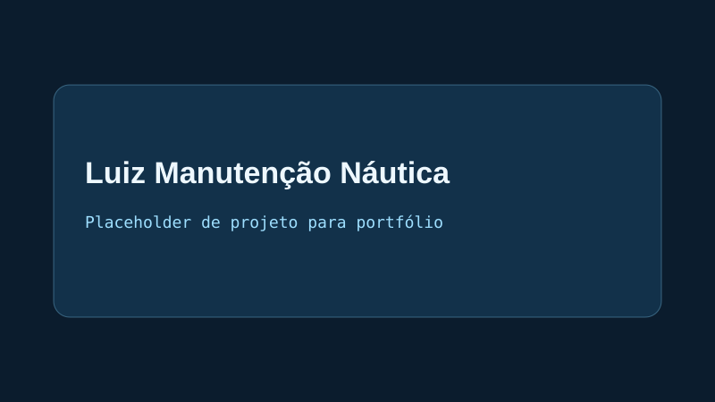
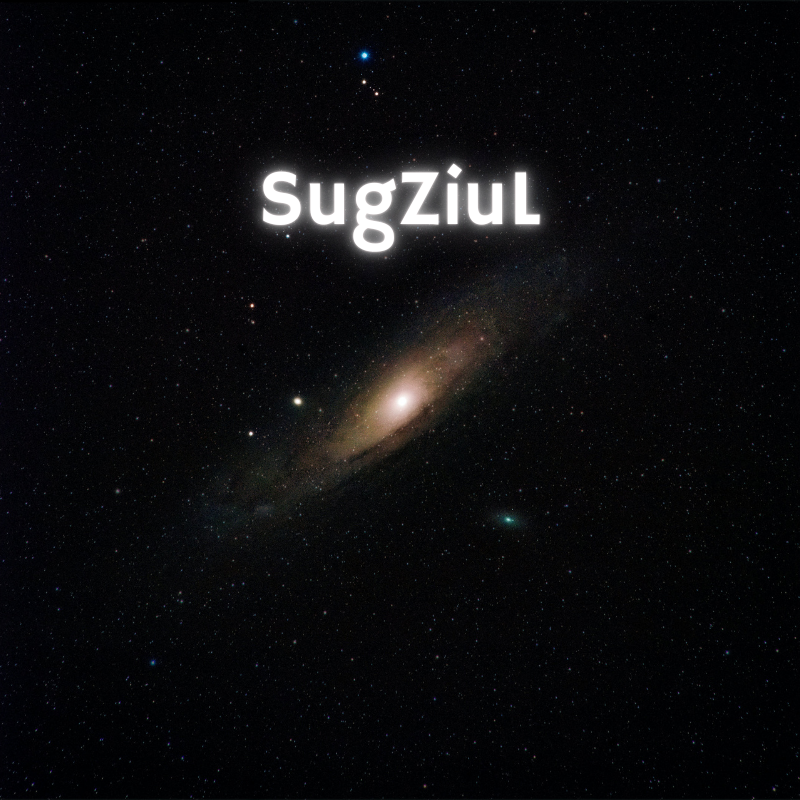
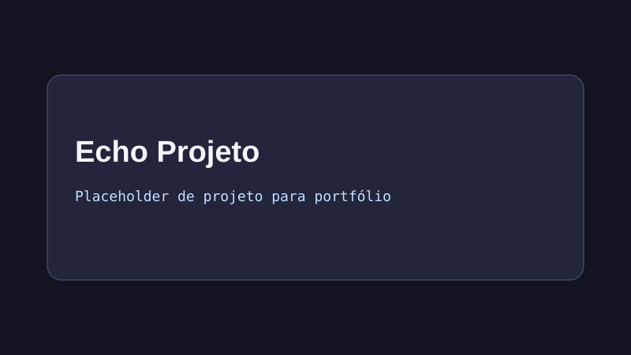
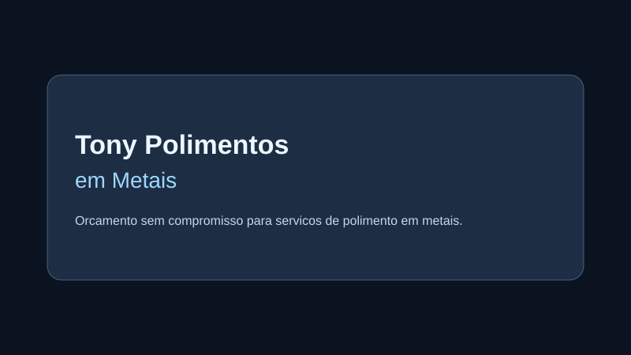
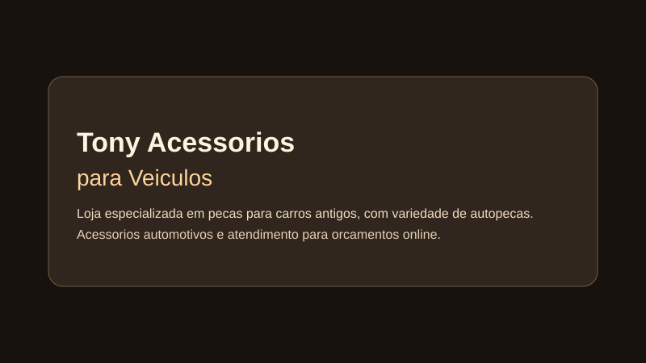
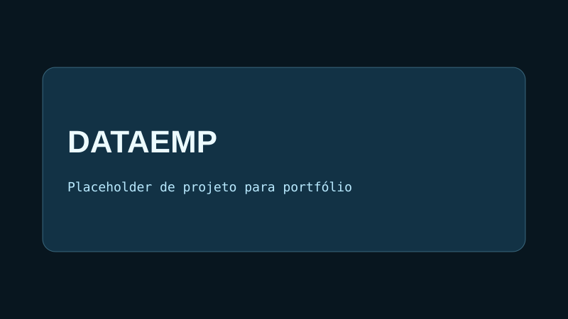
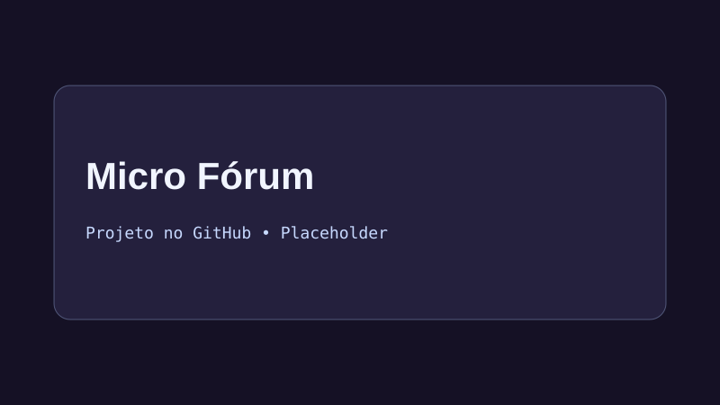
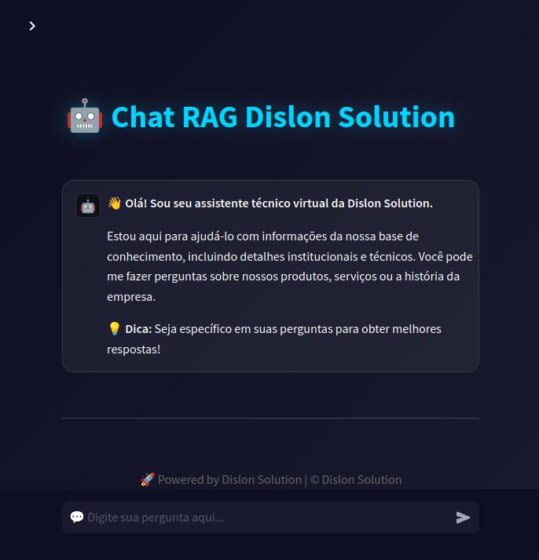
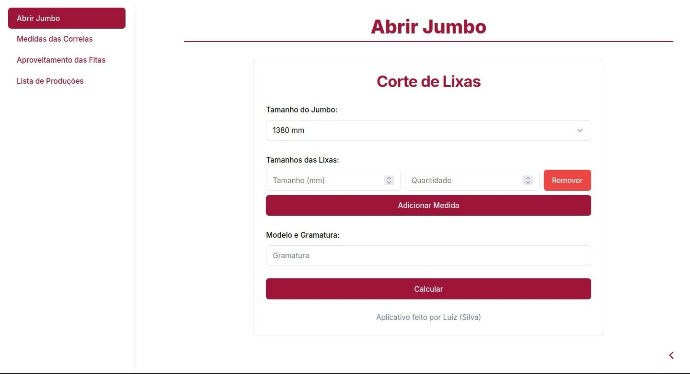

Curso de Arrais Amador e Motonauta com habilitacao nautica oficial, aula pratica inclusa e certificacao valida por 10 anos.

Tenho 21 anos e moro no Brasil. Atualmente estou cursando ciência da computação, sou apaixonado por entender as coisas ao meu redor e estou sempre em busca de novos aprendizados e desafios.

Curso de Arrais Amador e Motonauta com habilitacao nautica oficial, aula pratica inclusa e certificacao valida por 10 anos.

Projeto web publicado em dominio proprio com foco em apresentacao online, navegacao direta e experiencia visual.

Site institucional para servicos de polimento em metais, com foco em contato rapido e orcamento sem compromisso.

Loja especializada em pecas para carros antigos, com variedade de autopecas e acessorios para veiculos.

Empresa de software com foco em solucoes inovadoras, transformacao digital e desenvolvimento orientado a resultados.

Mini forum inspirado no micro reddit, publicado no GitHub, com estrutura enxuta para discussoes e posts.

Chatbot com LLM e RAG para respostas contextualizadas, integrando busca de conhecimento e interface web.

Aplicacao web para controle de producao, organizacao de processos e acompanhamento operacional.

Aplicativo desktop em Ruby com interface grafica para anotacoes rapidas e uso cotidiano.
Conhecimentos e Habilidades
Redes Sociais
GitHub
LinkedIn
Instagram